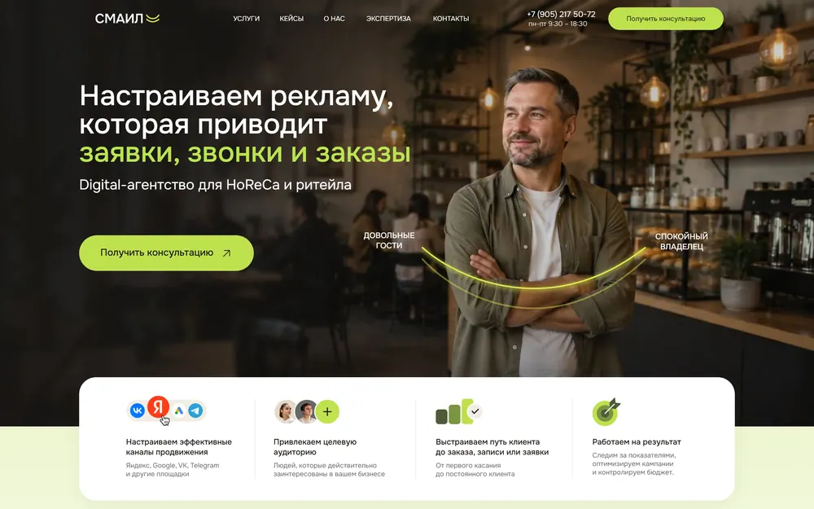
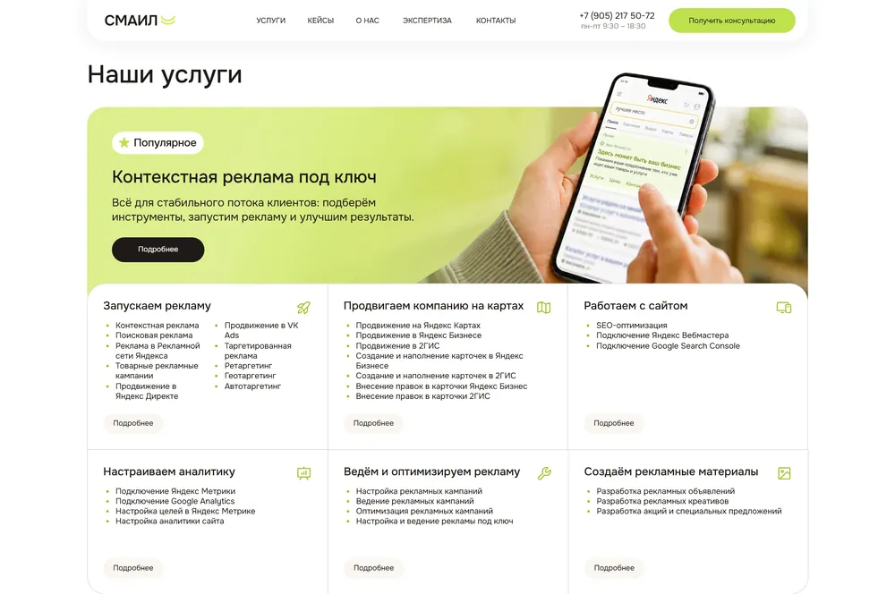
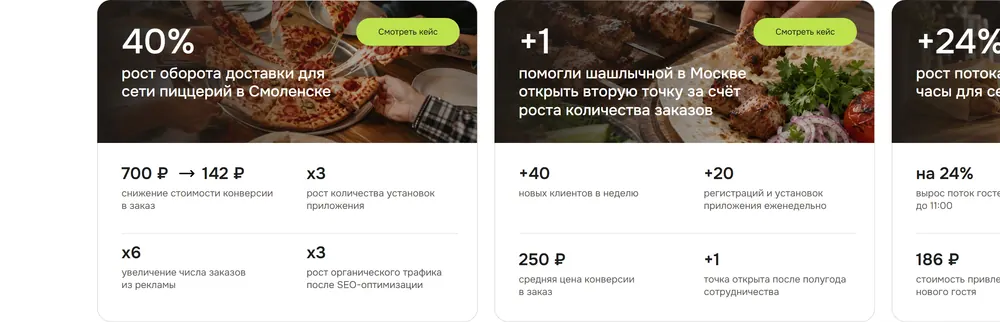

СМАИЛ
Задача
Собрать сайт агентства, чтобы владельцы бизнеса могли понять, чем оно занимается, и выбрать нужную услугу.
Решение
Объединила услуги в шесть групп и выстроила страницу от задач бизнеса к кейсам и заявке. Собрала сайт и адаптив в Tilda.
От рекламного отдела к агентству
Контекст
Раньше отдел работал с клиентами материнской компании. Новому агентству нужен был сайт, который объяснит услуги владельцам ресторанов, магазинов и других локальных бизнесов. Название и идею разработала маркетолог. Я отвечала за визуальную подачу материалов, структуру блоков, адаптив и сборку в Tilda.
Улыбка на первом экране
Первый экран
Метафору улыбки я перенесла в фотографию первого экрана. Дуга связывает довольного гостя и спокойного владельца. Рядом — предложение агентства и кнопка консультации.

Из 40 пунктов — шесть групп услуг
Структура услуг
Список начинался с отдельных рекламных инструментов. Я сгруппировала их по задачам бизнеса и вынесла технические детали внутрь карточек. Так посетитель может сначала найти подходящую услугу и уже потом узнать, что в неё входит.


Проблема и решение рядом
Арт-дирекшн
В первом варианте персонаж, цифры и плашки конкурировали за внимание. Для финального блока я развела проблему и решение по двум колонкам. Фотографии сгенерировала в тёплом свете и подобрала одежду в палитре сайта. Красный и зелёный помогают считывать сравнение.


От услуг к заявке на телефоне
Путь к заявке
На странице можно узнать, кому подходит агентство, посмотреть услуги и кейсы, затем оставить заявку. Для адаптива я перестроила блоки в Zero Block и сохранила зелёный акцент для ключевых действий.



Сайт для клиентов агентства
Результат
Опубликованный сайт доступен на smile-digital.ru ↗.